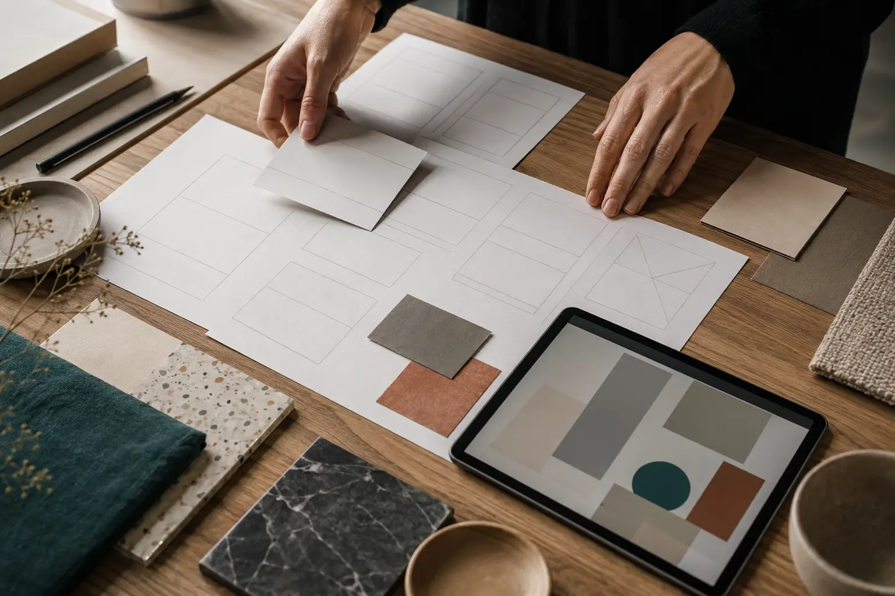

Помогаю небольшим командам превращать сложный материал в ясный продукт, публикацию или визуальную систему.
Подход
Содержание сначала. Форма — вслед за ним.
Я начинаю не с готового стиля, а с разговора, исследования и структуры. Поэтому результат не выглядит случайной оболочкой: он продолжает логику самого проекта.
9 летв цифровом дизайне
28завершённых запусков
4долгих партнёрства

Процесс
Три понятных этапа без чёрного ящика.
На каждом этапе видны решения, промежуточные материалы и следующий шаг. Проект остаётся общим разговором, а не закрытым производством.
01 · Рамка
Понять задачу
Цель, аудитория, содержание, ограничения и критерии готовности.
02 · Система
Собрать решение
Архитектура, визуальное направление, прототипы и рабочие сценарии.
03 · Выпуск
Проверить в жизни
Адаптация, доступность, финальный контент и аккуратная передача.
Могу помочь
Стратегия, дизайн и редактура.
01
Цифровые продукты
Структура, интерфейс, дизайн-система и запуск.
02
Авторские сайты
Портфолио, журналы, культурные и исследовательские проекты.
03
Редакционные серии
Содержание, визуальный ритм и публикационные форматы.